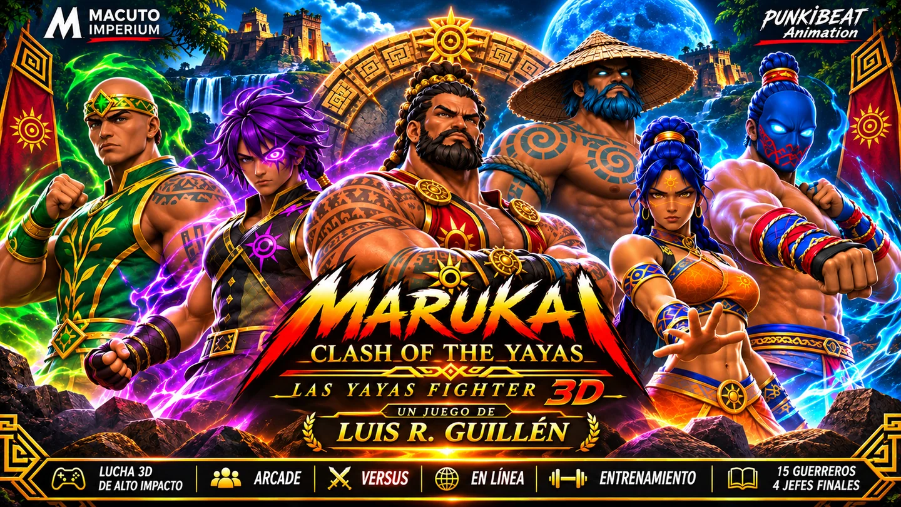

01PLAY & DISCOVER
itch.io
Download Márukai for Windows for free, either as a portable ZIP or an installer.
VISIT ITCH.IOWarriors, worlds and legends collide in a game inspired by Taíno-Caribbean identity. Discover the playable Windows release and follow its development.

Márukai: Clash of the Yayas features original fighters and arenas from the Las Yayas universe. With a free Windows release and an evolving 3D fighting-game project, it is built with an independent creative vision.
Only the game and its three official platforms. No books, unfinished projects or internal storefronts.
Download Márukai for Windows for free, either as a portable ZIP or an installer.
VISIT ITCH.IODiscover the crowdfunding campaign for the Márukai 3D fighting-game project.
VIEW KICKSTARTERExplore the Márukai community on Game Jolt and follow future updates.
VISIT GAME JOLTTHE STORY IS JUST BEGINNING
Explore the three official destinations. All game updates and rewards will be announced on their respective platform pages.
VIEW THE PLATFORMS